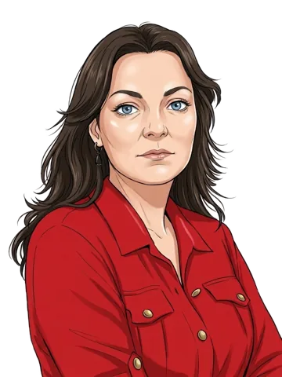

Agenda van maandag 9 november 2026 › Wetgevingsoverleg over de begrotingen van de ministeries EZ, BZK en JenV voor zover het onderwerpen betreft die zien op digitalisering
Inbreng van de Kamer: Vermeer, Dassen, Ceder, Beckerman
Waar ging dit deel over
Voor dit deel is (nog) geen samenvatting geschreven. Hieronder staan de sprekers; het verslag staat er wel.
Hoe liep het debat af
In dit debat zijn 16 moties ingediend. Van deze moties staat geen uitslag in onze gegevens.
Naar de moties van het hele debat
Dit debat ging over een wetsvoorstel. Over het wetsvoorstel zelf en over amendementen stemt de Kamer apart; die uitslagen staan niet in onze gegevens. Na de Tweede Kamer stemt de Eerste Kamer over het wetsvoorstel.
Wie spraken
Voor dit deel is (nog) geen samenvatting geschreven. Hieronder staan de sprekers; in het verslag lees je alles wat ze zeiden.

Henk Vermeer BBB · 3 zetels · oppositie

Jantine Zwinkels CDA · 18 zetels · coalitie

Laurens Dassen Volt · 1 zetel · oppositie
Daniël van den Berg JA21 · 9 zetels · oppositie

Don Ceder ChristenUnie · 3 zetels · oppositie

Sandra Beckerman SP · 3 zetels · oppositie
Alle delen van dit debat
- 1.Inbreng van de Kamer: KathmannInbreng van de Kamer · 10.03 uur · nog geen samenvatting
- 2.Inbreng van de Kamer: El Boujdaini, Emiel van DijkInbreng van de Kamer · 10.52 uur · nog geen samenvatting
- 3.Inbreng van de Kamer: Rajkowski, Van den Berg, ZwinkelsInbreng van de Kamer · 12.01 uur · nog geen samenvatting
- 4.Inbreng van de Kamer: Vermeer, Dassen, Ceder, BeckermanInbreng van de Kamer · 13.16 uur · nog geen samenvatting
- 5.Antwoord van het kabinet: Van WeelAntwoord van het kabinet · 14.57 uur · nog geen samenvatting
- 6.Antwoord van het kabinet: AerdtsAntwoord van het kabinet · 15.40 uur · nog geen samenvatting
- 7.Antwoord van het kabinet en tweede termijn van de Kamer: Van der Burg, Kathmann, El Boujdaini, Rajkowski en 6 anderenAntwoord van het kabinet en tweede termijn van de Kamer · 16.50 uur · nog geen samenvatting
- 8.Antwoord in tweede termijn: Van der Burg, AerdtsAntwoord in tweede termijn · 18.01 uur · nog geen samenvatting